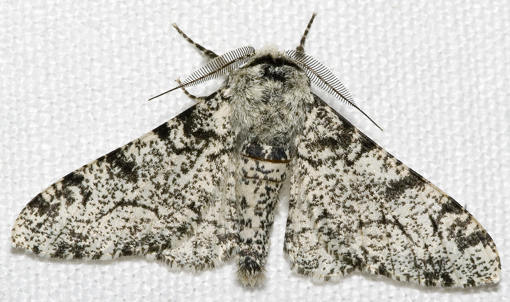
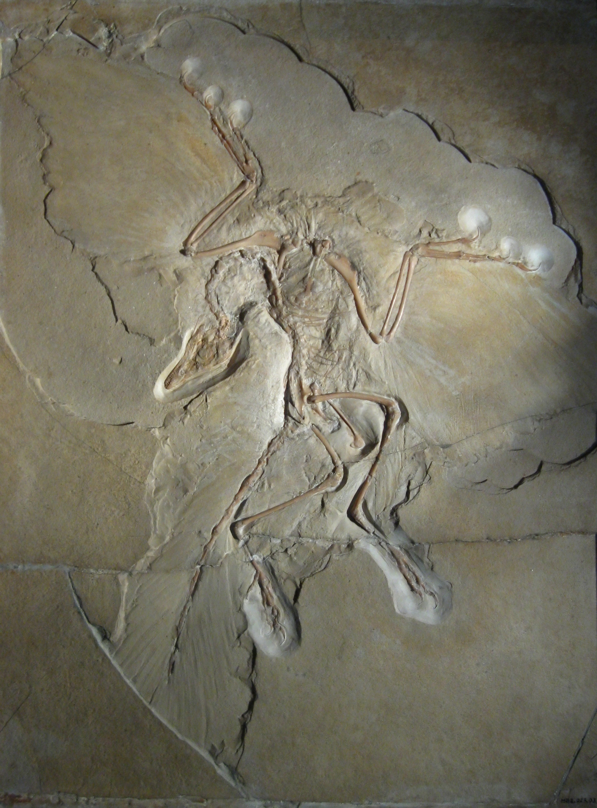
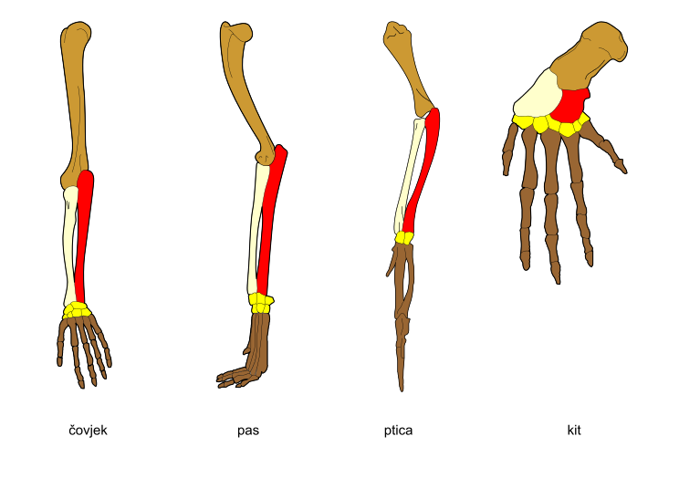
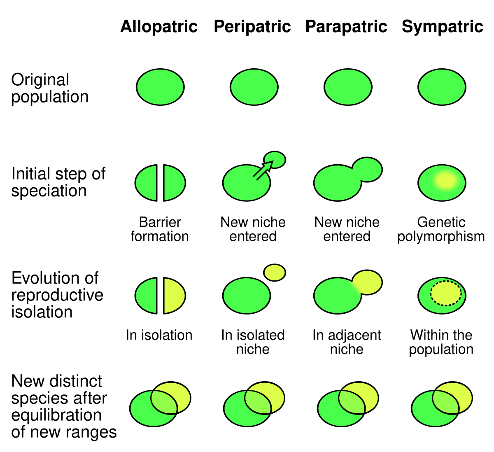
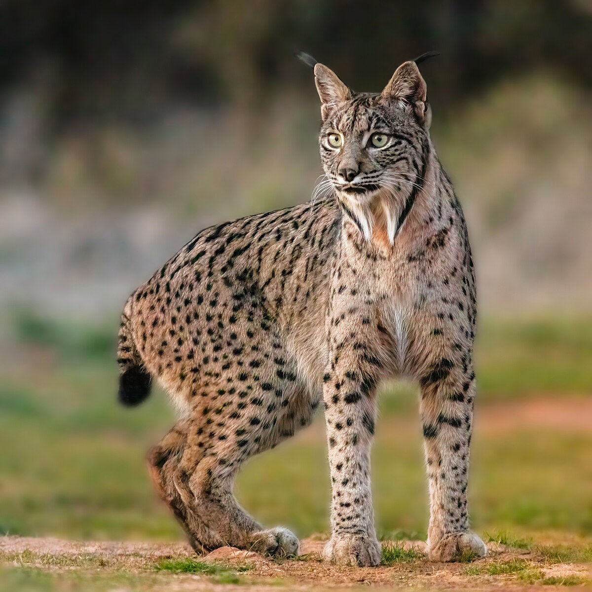

Diversidad de especies
Este sitio reorganiza el contenido del material original en bloques breves, comparaciones directas, imágenes con contexto y herramientas de accesibilidad para estudiantes de enseñanza media.
Marca secciones como completadas, responde el quiz y revisa tus resultados en el panel del estudiante.

Diversidad de especies

Base genética
Guía visual del sitio
Ideas clave
La biodiversidad incluye genes, especies y ecosistemas.
La evolución explica cómo cambian las especies con el tiempo.
Las mutaciones y la recombinación generan variabilidad genética.
La selección natural favorece rasgos que ayudan a sobrevivir y reproducirse.
Los fósiles, la anatomía, la geografía y el ADN entregan evidencias.
El aislamiento prolongado puede originar nuevas especies.
Apoyo al aprendizaje
Presenta una sección a la vez para reducir distracciones y ayudar al foco.
Suma estrellas cuando avanzas y responde preguntas para reforzar la motivación.
Incluye preguntas breves, un simulador simple y experiencias XR para comprender mejor ideas abstractas.
Teorías evolutivas
Sostenía que las especies eran invariables.
Hoy no explica las pruebas fósiles, anatómicas ni genéticas.
Planteó que el uso y desuso modifica órganos y que esos cambios se heredan.
Fue importante históricamente, pero no coincide con la genética moderna.
Las ventajas heredables ayudan a sobrevivir y dejar más descendencia.
Eso cambia a las poblaciones a lo largo de generaciones.
Une selección natural con genética.
La evolución ocurre por cambios en la frecuencia de genes en una población.
Ejemplo clásico
El cuello se habría alargado por usarlo mucho, y ese cambio se heredaría.
Ya había variaciones. Las jirafas con cuello más largo tuvieron ventaja y dejaron más descendencia.
Los pinzones de Darwin ayudan a entender cómo pequeñas diferencias pueden relacionarse con la adaptación.
Selección natural

Este ejemplo se usa para explicar cómo ciertas variantes pueden pasar más desapercibidas en un ambiente y, por eso, tener más probabilidades de sobrevivir.
Pruebas de la evolución

Los fósiles muestran organismos del pasado y permiten observar cambios a lo largo del tiempo.
El Archaeopteryx se usa como ejemplo porque combina rasgos asociados a reptiles y aves.

Los órganos homólogos tienen una estructura básica parecida, aunque cumplan funciones distintas.
Eso sugiere que distintas especies comparten un ancestro común.
Comparar secuencias de ADN y proteínas ayuda a saber qué especies están más emparentadas.
Mientras más similitud genética, más cercano suele ser el parentesco evolutivo.

La distribución de las especies y el aislamiento geográfico ayudan a explicar por qué unas poblaciones evolucionan de forma distinta.
Por eso las islas, cordilleras o grandes distancias pueden favorecer caminos evolutivos diferentes.
Especiación
Una población se divide o queda aislada.
Cada grupo acumula diferencias genéticas con el tiempo.
El ambiente y la selección natural actúan de manera distinta.
Después de muchas generaciones, ya no pueden reproducirse entre sí.
Entonces hablamos de especies diferentes.

El aislamiento puede ocurrir por barreras geográficas o por mecanismos reproductivos dentro de una población.
La idea central es que el intercambio genético se reduce o se interrumpe.
Conceptos clave
Es un cambio en el material genético. No siempre se ve a simple vista y no siempre es beneficioso.
Una mutación aporta variación. Esa variación luego puede mantenerse o desaparecer en una población.
Es una característica que ayuda a sobrevivir o reproducirse mejor en un ambiente.
No aparece “porque el organismo la quiera”, sino porque ciertas variantes ya presentes resultan ventajosas.
Es el proceso por el que algunos rasgos heredables se vuelven más comunes porque ayudan a sobrevivir y dejar descendencia.
La selección natural no “crea” el rasgo: actúa sobre la variabilidad que ya existe.
Es la formación de una nueva especie después de muchas generaciones de separación y acumulación de diferencias.
Aquí ya no hablamos solo de variación dentro de una población, sino de linajes que dejan de cruzarse entre sí.
Cómo estudiar este tema
Observa primero la imagen o ejemplo.
Lee la idea principal en una sola frase.
Relaciona esa idea con una evidencia.
Comprueba con una pregunta breve.
Aplicar lo aprendido
En un ambiente oscuro, una mariposa con color más oscuro se camufla mejor y sobrevive más.
Idea asociada: selección natural.
Dos poblaciones quedan separadas por una barrera geográfica y con el tiempo ya no pueden reproducirse entre sí.
Idea asociada: especiación.
Al comparar ADN de dos especies, se encuentra una secuencia muy parecida.
Idea asociada: parentesco evolutivo cercano.
Cuidado de la biodiversidad
Cuando hay variedad de especies y relaciones ecológicas, el ecosistema funciona mejor.
La fragmentación y destrucción del ambiente pueden reducir poblaciones y romper redes ecológicas.

El lince ibérico es un ejemplo cercano de cómo una especie puede verse amenazada por pérdida de hábitat y disminución de sus presas.
Glosario
Variedad de genes, especies y ecosistemas.
Cambio en el material genético.
Proceso por el que ciertos rasgos heredables se vuelven más comunes.
Rasgo que ayuda a vivir mejor en un ambiente.
Organismo del que descienden distintas especies.
Formación de una nueva especie.
XR / 3D
Explora una doble hélice de ADN en 3D con un visor integrado, giro automático y controles de acercamiento.
Abrir 3DVisualiza un modelo 3D en realidad aumentada usando <model-viewer> como base lista para crecer.
Recorre una escena inmersiva con puntos de información sobre biodiversidad, selección natural y fósiles.
Abrir VRMini simulador
Mueve el control y observa cómo cambia la ventaja de una mariposa clara u oscura según el ambiente.
Cuando el ambiente se vuelve más oscuro, la mariposa oscura se camufla mejor y aumenta su probabilidad de sobrevivir.
Quiz final
Lee cada pregunta con calma. Busca las palabras clave, elige una alternativa por tarjeta y luego revisa tu puntaje, porcentaje y nota.
0 de 8 respondidas
Cuando respondas todo, presiona el botón para ver tu resultado final.
Puntaje: 0 / 8
Porcentaje: 0%
Nota: 1.0
Estrellas: 0 ⭐
Logro: En progreso
Accesibilidad
Resumen visual
Variedad de vida: genes, especies y ecosistemas.
Cambio de poblaciones a lo largo del tiempo.
Fósiles, anatomía, biogeografía y ADN.
Proteger la biodiversidad mantiene ecosistemas funcionando.
Cierre de clase
Cuando el progreso llegue al 100%, se habilita un botón para preparar el correo de finalización de clase hacia los docentes responsables.
Completa primero todas las secciones o llega al 100%.